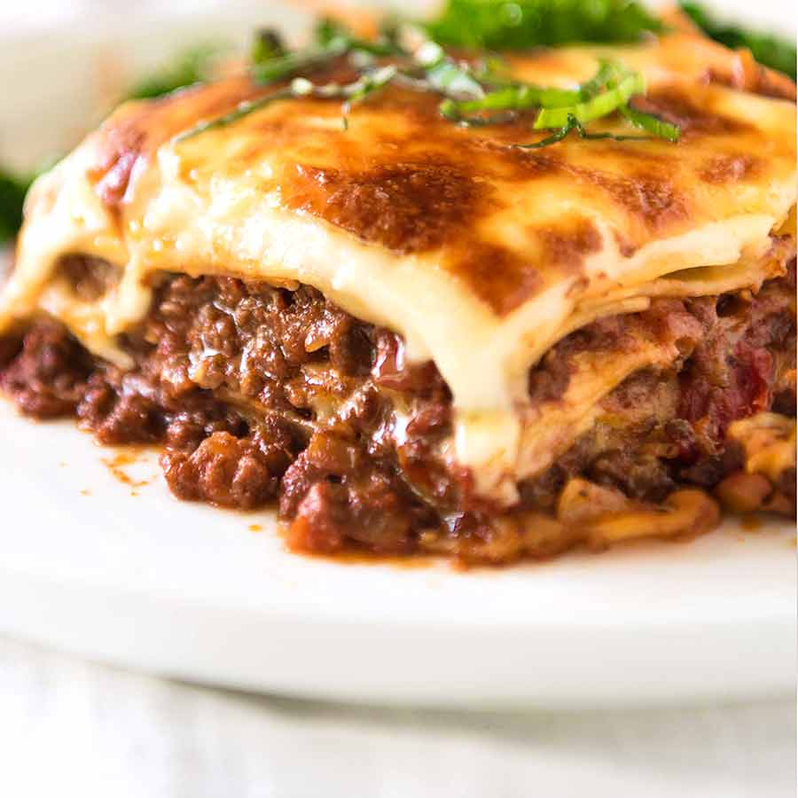

Lasagna

Description
Lasagna is a popular italian dish that contains
a lot of ingredients and is somewhat difficult to make,
but it's really delicious!
Ingredients
- lasagna noodles
- canned tomatoes
- onions
- ground beef
- olive oil
- milk
- flour
- butter
- seasoning
Steps
- heat the olive oil and cook the onions until they are soft
- add the ground beef
- add the canned tomatoes after the beer has been cooked
- let it simmer for 2 hours
- make a dux from the butter and flour
- add the milk to make the bechamel sauce
- put the noodle and two sauces on each other
- put in the oven for 30 minutes or until it's golden brown